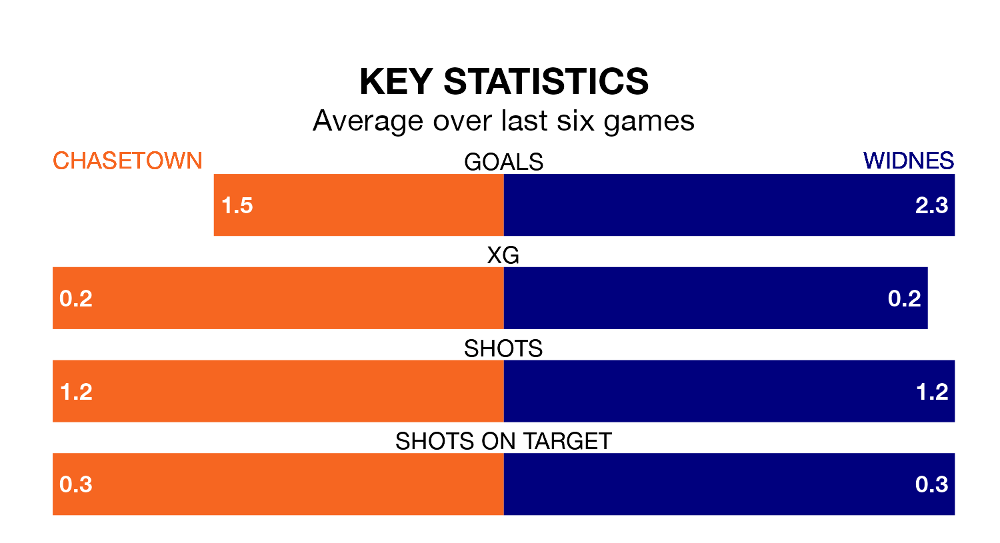

Chasetown host Widnes on Saturday at the Scholars Ground in the Northern Premier League Division One West.
In their last league match, on February 17, Chasetown lost to Clitheroe 4-1 away.
Widnes also lost, 3-1 at home against Witton Albion.
With 38 goals in 28 games so far this season, Chasetown are scoring at the league's average rate with 1.4 goals per game. But they are conceding at an average rate too, letting in 38 goals at a rate of 1.4 per game.
Widnes are also average scorers, with 1.4 goals per game. They have conceded 1.0 goal per game.
The hosts are in disappointing form in the Northern Premier League Division One West, with two wins and four losses from their last six games.
With three wins and a draw over that period, the Whites' form is better – they have taken 10 points from 18, compared to Chasetown's six.
Chasetown are ninth in the table after 28 games, of which they have won 11 and drawn six, earning 39 points.
The away team are one place behind the home side in 10th, with 11 wins and five draws putting them on 38 points.
Updated: 10:08 (UTC), 23/02/24